在 VS 2017 中输出 “Hello World”
1.下载安装 VS2017
根据自己的需求下载 Visual Studio
安装过程略
2.创建文件
创建项目文件
选择文件->新建->项目创建项目
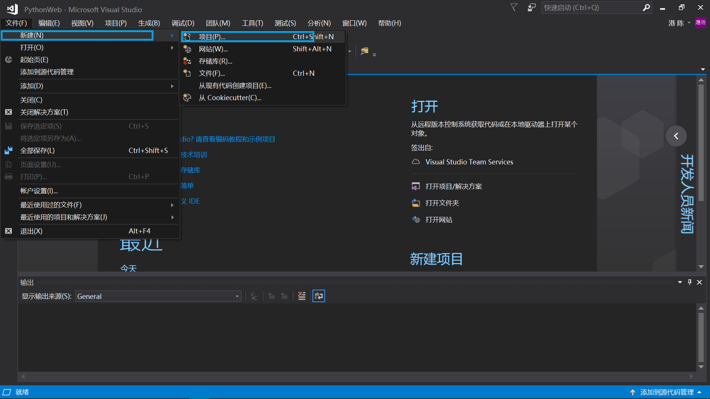
右侧已安装下选择Visual C++,常规,选择空项目
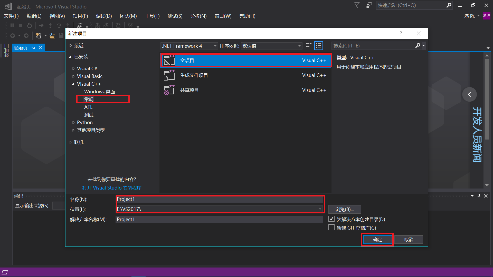
项目名称和位置可以自定义，点击确定。
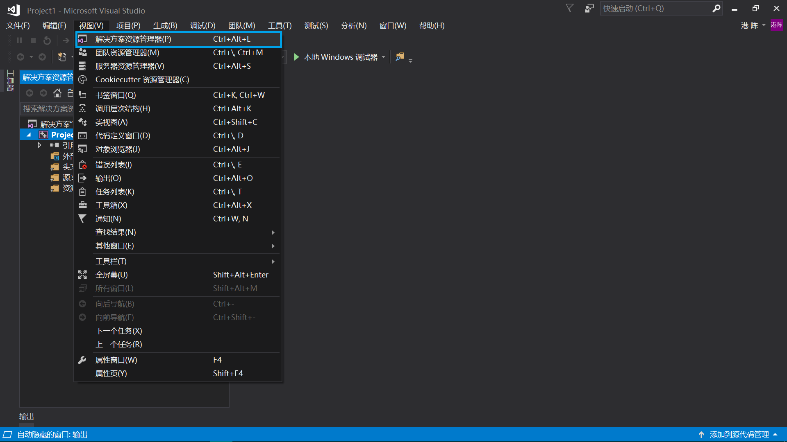
在菜单栏选择视图窗口，打开解决方案资源管理器
设置项目属性
在 Visual Studio 中选择项目菜单栏，选择最后一项属性，或者直接右击左侧解决方案资源管理器中的Project1，选择最后一项属性，
弹出下图所示的对话框
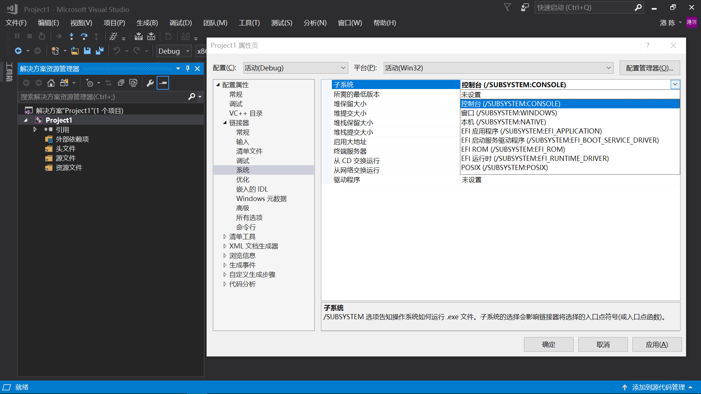
左侧选择配置属性->链接器->系统，右侧选择子系统，下拉菜单中选择控制台(/SUBSYSTEM:CONSOLE),点击确定完成。
###创建源文件
回到Visual Studio
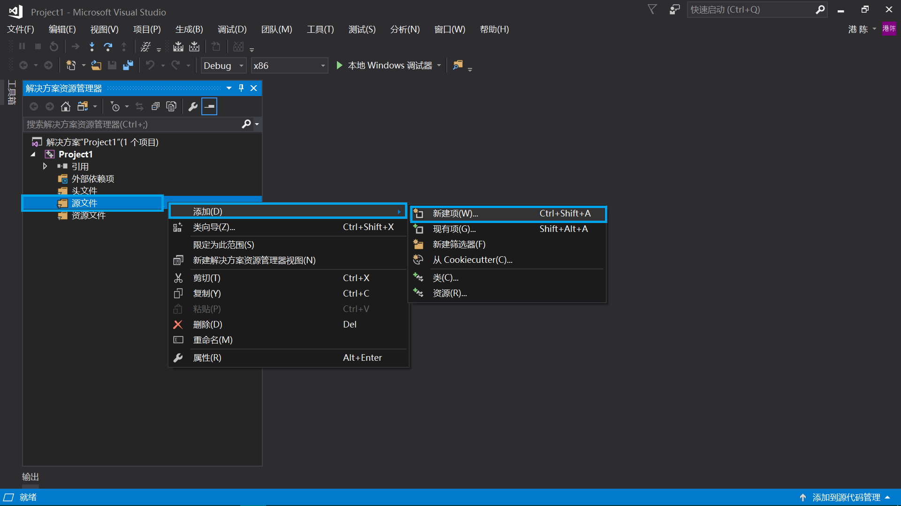
在右侧解决方案资源管理器中，右键源文件->添加->新建
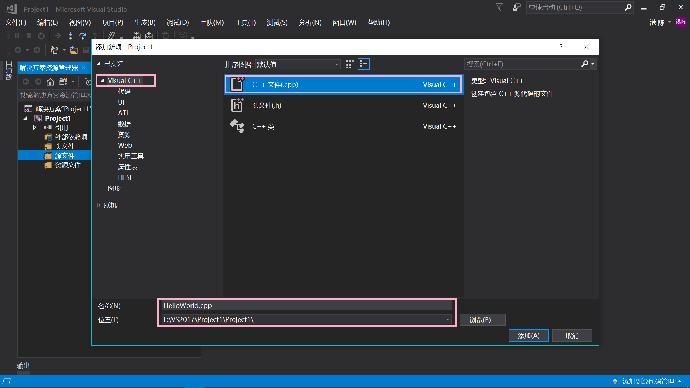
在弹出的窗口中右侧选择Visual C++ -> C++文件(.cpp),建议讲文件名称改为HelloWorld.cpp,位置为默认位置。单击确定
3.输入代码
在下图所示的窗口中输入代码
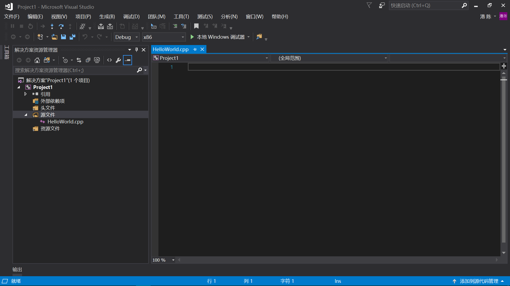
1 |
|
4.编译并运行
在 Visual Studio 的菜单栏中选择生成->生成解决方案
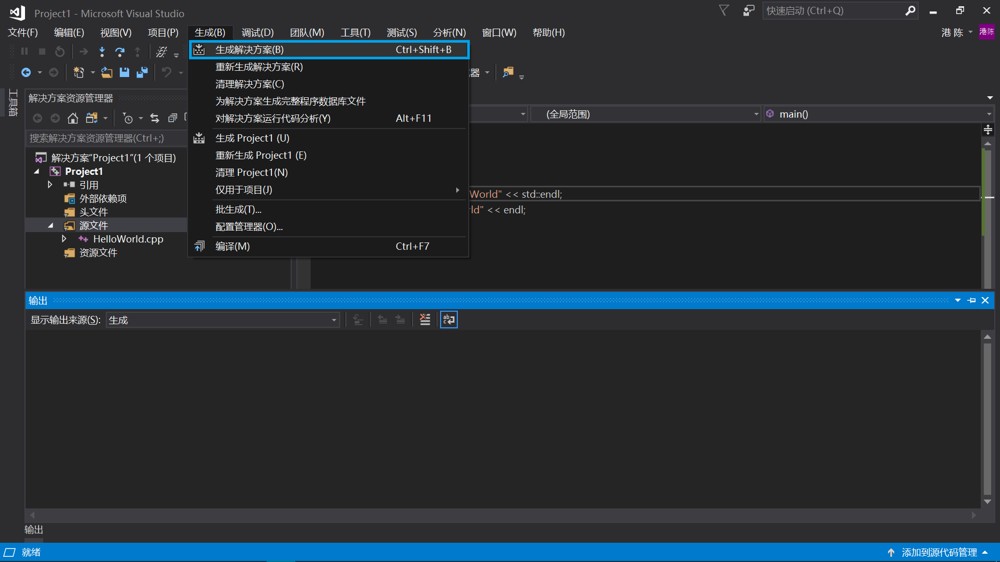
下图输出窗口中应表明没有错误，否则检查代码是否有误。
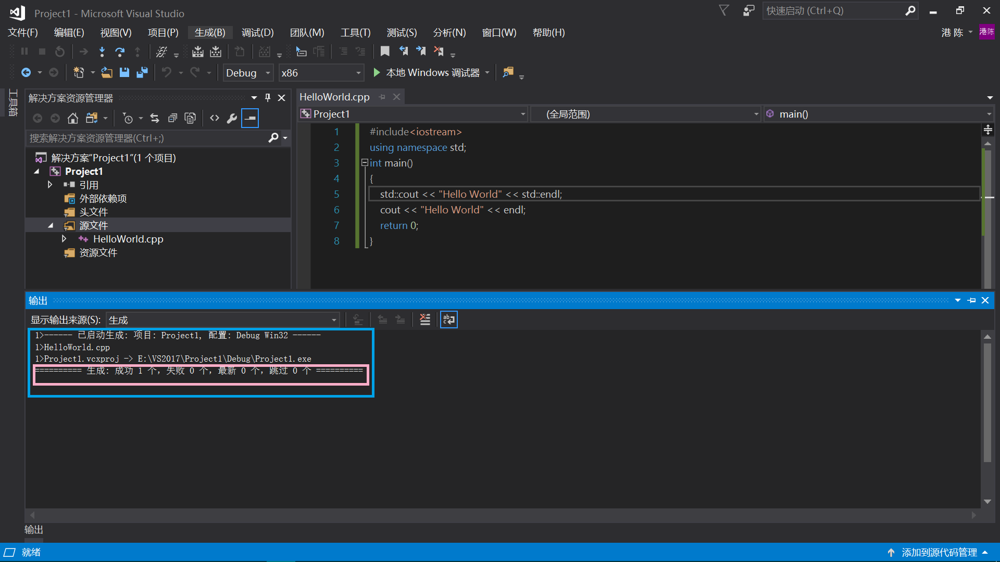
确认代码无误后，菜单栏中选择调试->开始执行(不调试),或者按下Ctrl+F5。
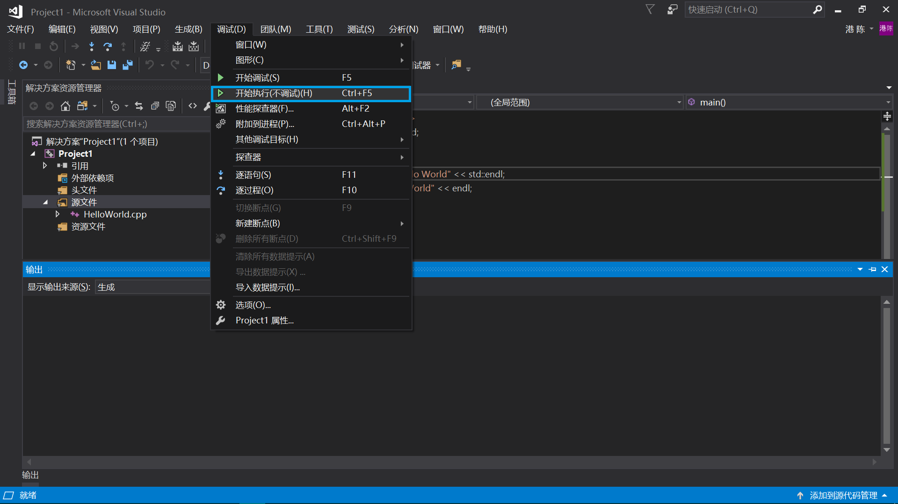
弹出下图所示窗口，表明输出成功，其中第一行是用 Static静态成员函数 输出 “Hello World“,下一行是用 iostream标准输入输出流 中的 COUT 输出
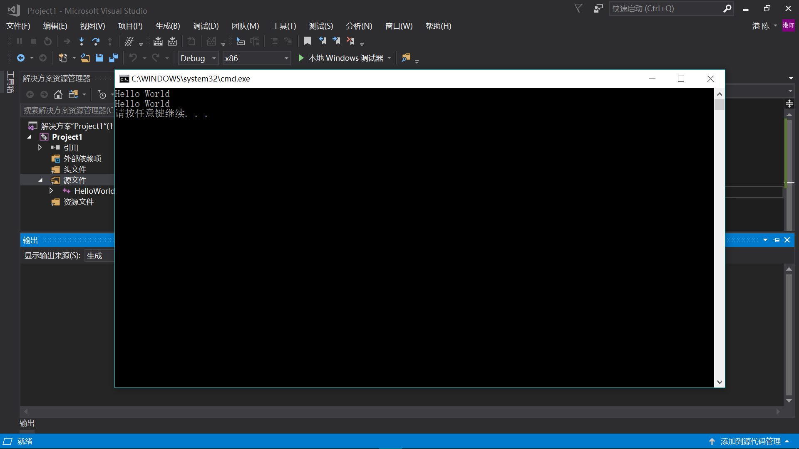